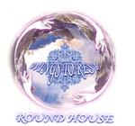

| Artist: | Round House |
| Title: | Wings To Rest |
| Label: | Poseidon Records MTP-103 |
| Length(s): | 45 minutes |
| Year(s) of release: | 2002 |
| Month of review: | [01/2004] |
| 1) | A Red Rose And Whisper Of A Devil | 4.22 |
| 2) | Endless Leep | 2.38 |
| 3) | A Splendid Dangerous Person | 6.18 |
| 4) | Wings To Rest | 8.37 |
| 5) | A City After The Rain | 5.18 |
| 6) | Softy Mist | 1.27 |
| 7) | A Tear Of Sphinx | 6.08 |
| 8) | The Sea Wind | 5.19 |
| 9) | Sweet Love (band Version) | 5.06 |